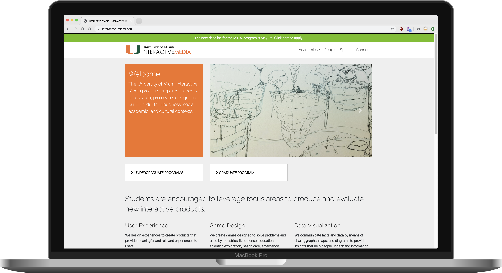
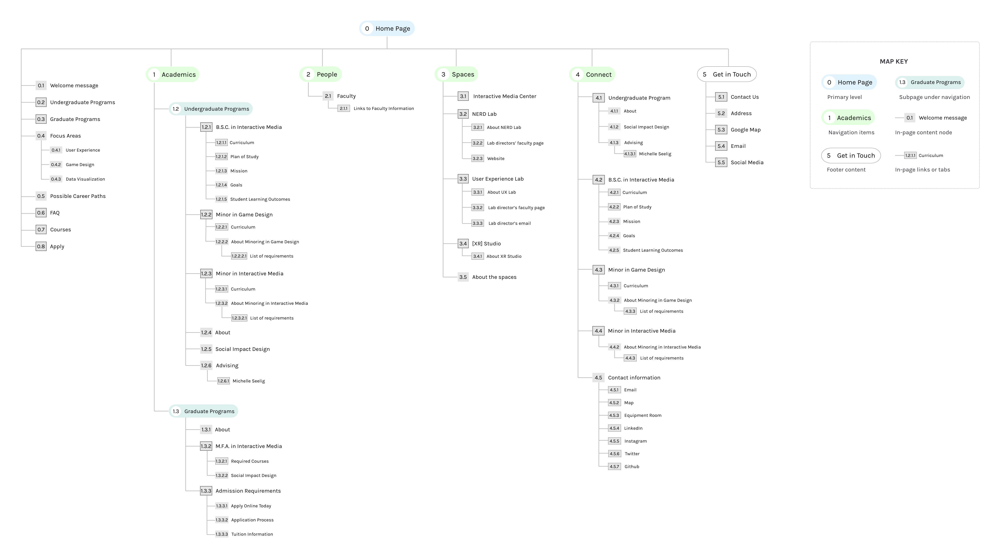

An open card sort study on Interactive Media program's website
OVERVIEW
My team — Liz Estefan, Jessenia Morales and I conducted a Directive & Cautious Card Sort Study with 24 participants. They were asked to sort 48 cards based on item similarity and to take their time and be thoughtful in the process. The purpose of the study was to have a better understanding of our user's mental model, feedback about content, terminology and organization of UM’s Interactive Media program's website. In turn, we analyze the collected data to inform recommendations to redesign the information architecture of the site, so the users can find information and accomplish their tasks with ease.
PRODUCT DESCRIPTION
The Interactive Media's website serves as a tool to introduce the curriculum, resources and anything related to this program to its visitors. The target users are mainly prospective students, parents of prospective students, current students, alumni, program partners and donors. The product goal is to recruit new students, inform students about the program and provide collarbation opportunities for partnerships with companies and job / internship opportunities for students and alumni.
CURRENT IA
I created a sitemap in order to analyze the current structure of the website, and here are some of the problems we identified. Before we even started recruiting participants for the study, we noticed that many contents / card items are missing from the current site. For example, there are no detailed admission information whatsoever and even when there is a related external link, the link is dead. There are no information about donors or company partnerships, no way for students to see what job / internship opportunities are available and there are duplicate information in the connect page.
DATA COLLECTION

Since we want to create an information archtecture that best matches our target user's expectations, we conducted an open card sort study using Optimal Sort. We asked our participants to complete a series of profile questionaire before the study, then we explained the purpose of this experiment. We asked them to take their time to arrange the cards in groups thoughtfully in a way that's meaningful to them. Then we asked them to label each group and prioritize them.
DATA ANALYSIS & FINDINGS
To analyze the data, we looked at the distance matrix, the dendrogram using best merge method, the standardized labels, as well as how the participants prioritized the categories. The analyses reveal most commonly grouped / paired items and possible subcategories based on the keywords and relevance.
- General information about the program should be prioritized and easily accessible, especially for prospective students.
- The information for each audience should be separated. Information for students, alumni and prospective students should each be in their own category in order to simplify the information search.
- Undergraduate information and Graduate information should not be in the same category.
- Participants group item lists together based on keywords. Therefore, consistent terminology should be used when describing related content.